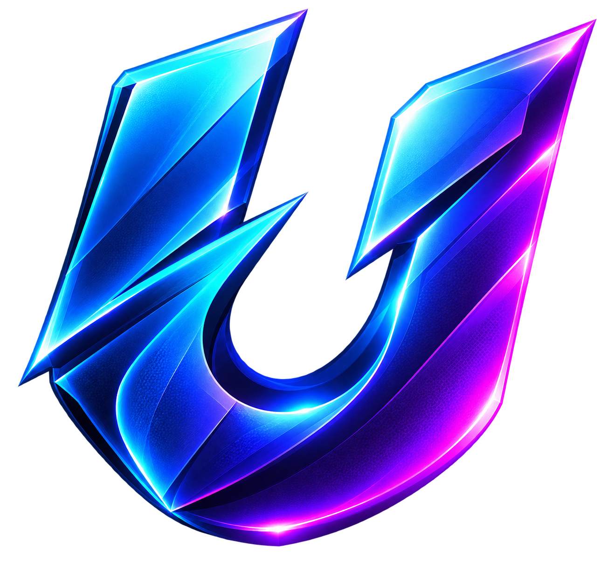

UPDATIQ
THE PULSE OF MLBB
MLBB · ИНФОРМАЦИОННЫЙ ЦЕНТР
Будь на шаг впереди.
Новости, патчи и мета Mobile Legends в одном месте. Без десятков каналов и лишнего шума.
Состояние меты
Винрейт—Нет данных
Пикрейт—Нет данных
Банрейт—Нет данных
Последние новости
Демонстрационный интерфейс. Актуальные новости и статистика появятся после подключения серверных источников.
Новости
Изменения баланса
⚔️
История патчей
Здесь будут баффы, нерфы, изменения навыков и предметов с ссылками на первоисточники.
Данные появятся после подключения источников.
История патчей
Здесь будут баффы, нерфы, изменения навыков и предметов с ссылками на первоисточники.
Данные появятся после подключения источников.
Мета MLBB
ПОСЛЕДНИЙ ПАТЧ: —S
⚔
Герой 1Нет данных✦
Герой 2Нет данных◈
Герой 3Нет данныхA
❖
Герой 4Нет данных✧
Герой 5Нет данныхB
◉
Герои появятся после подключения данных
Тир-листы авторов и измеряемая статистика будут помечаться отдельно. Демонстрационные карточки не являются рекомендацией по текущей мете.
Герои
✦
Каталог героев
Изменения баланса, показатели и сборки каждого героя будут собраны на одной странице.
Каталог героев
Изменения баланса, показатели и сборки каждого героя будут собраны на одной странице.
Ещё
◉
Источники
Официальный сайт, Telegram, YouTube и статистические сервисы.
⚙
Настройки
Язык интерфейса, уведомления и локально сохранённые предпочтения.
ⓘ
О приложении
UPDATIQ · версия 0.1.0 · независимый информационный агрегатор.